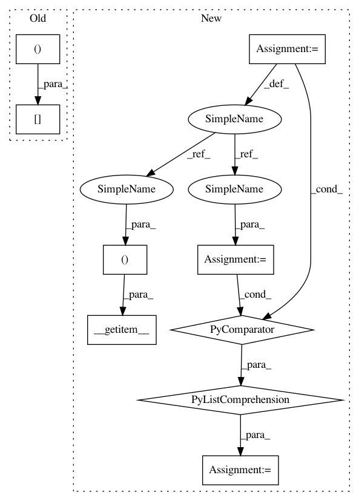

7570ee1d758c93dd4054009fc12be6cc31b54031,gpytorch/lazy/root_lazy_tensor.py,RootLazyTensor,_get_indices,#RootLazyTensor#Any#Any#,78
Before Change
def _get_indices(self, left_indices, right_indices):
n_indices = left_indices.numel()
if n_indices > self.size(-1) * self.size(-2):
return self.evaluate()[left_indices, right_indices]
else:
outer_size = left_indices.size(0)
inner_size = self.root.size(-1)
After Change
def _get_indices(self, left_indices, right_indices, *batch_indices):
n_indices = left_indices.numel()
if n_indices > self.size(-1) * self.size(-2):
return self.evaluate().__getitem__((*batch_indices, left_indices, right_indices))
else:
outer_size = left_indices.size(0)
inner_size = self.root.size(-1)
inner_indices = torch.arange(0, inner_size, dtype=torch.long, device=self.device)
// Repeat the indices to get all the appropriate terms
batch_indices = [_outer_repeat(batch_index, inner_size) for batch_index in batch_indices]
left_indices = _outer_repeat(left_indices, inner_size)
right_indices = _outer_repeat(right_indices, inner_size)
inner_indices = _inner_repeat(inner_indices, outer_size)
In pattern: SUPERPATTERN
Frequency: 3
Non-data size: 9
Instances
Project Name: cornellius-gp/gpytorch
Commit Name: 7570ee1d758c93dd4054009fc12be6cc31b54031
Time: 2018-11-25
Author: gpleiss@gmail.com
File Name: gpytorch/lazy/root_lazy_tensor.py
Class Name: RootLazyTensor
Method Name: _get_indices
Project Name: cornellius-gp/gpytorch
Commit Name: 7570ee1d758c93dd4054009fc12be6cc31b54031
Time: 2018-11-25
Author: gpleiss@gmail.com
File Name: gpytorch/lazy/matmul_lazy_tensor.py
Class Name: MatmulLazyTensor
Method Name: _get_indices
Project Name: cornellius-gp/gpytorch
Commit Name: 7570ee1d758c93dd4054009fc12be6cc31b54031
Time: 2018-11-25
Author: gpleiss@gmail.com
File Name: gpytorch/lazy/interpolated_lazy_tensor.py
Class Name: InterpolatedLazyTensor
Method Name: _get_indices